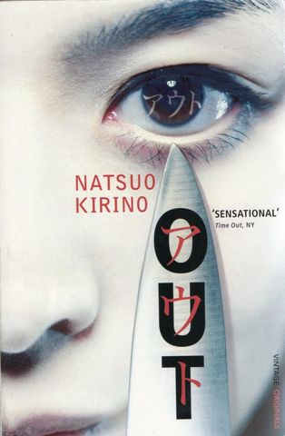

Japanese
Moshi Moshi
The novel follows Yoshie, a girl in her 20s whose father, a musician, dies of a strange love-murder-suicide pact with a stranger. Trying to distance themselves from the tragedy, Yoshie and her mother move to a little apartment in Shimokitazawa. However, Yoshie’s past is not so easily forgotten, and her grief haunts her dreams as she tries to build a new life in Tokyo. Ratings 3.7/5 Genre : Literary Fiction
Out
The plot follows a young mother—who works a dead-end job in a bento factory—as she violently murders her deadbeat husband, and, subsequently, attempts to cover up the crime and outwit the detectives who are determined to catch her. The novel is a gritty, complex look at the psychology of violent crime and the lengths that people will go to to break out of dead-end circumstances. Not for the faint-hearted (tread carefully for those who aren’t a fan of graphic violence), but certainly a memorable page-turner! Rating 4/5 Genre : Crime Novel
A pale view of the hills
A Pale View of the Hills, follows the story of a middle-aged Japanese woman living alone in England. While dwelling on the recent suicide of her daughter, she looks inward and finds her memory returning to a summer she and her friends spent in Nagasaki, trying to rebuild life after the war. A novel set in two countries, A Pale View of the Hills is a story of the struggles of assimilation across different cultures and family transitions; a story about loss and rediscovery, and about memory — as twisted as it could get. Rating 3.8/5

A tale for the time being
Ruth, one of the main characters, is an author living on a remote island who stumbles across a washed-up Hello Kitty lunchbox on the beach one day. Inside she finds Nao’s story, handwritten in a journal, as well as that of her one-hundred-and-something-year-old grandmother, a Buddhist nun. Among the themes that Ozeki tackles are bullying, prostitution, Alzheimer’s, environmentalism, ethics, philosophy and even quantum physics. Through Nao, Ozeki explores a darker side of Japanese society. Nao is mercilessly bullied by her classmates for being an outsider (having lived in America for some years), her father becomes a hikikomori, or a hermit, eventually attempting to take his own life, while Nao herself turns to working at compensated dating cafés to escape school.Rating 4/5